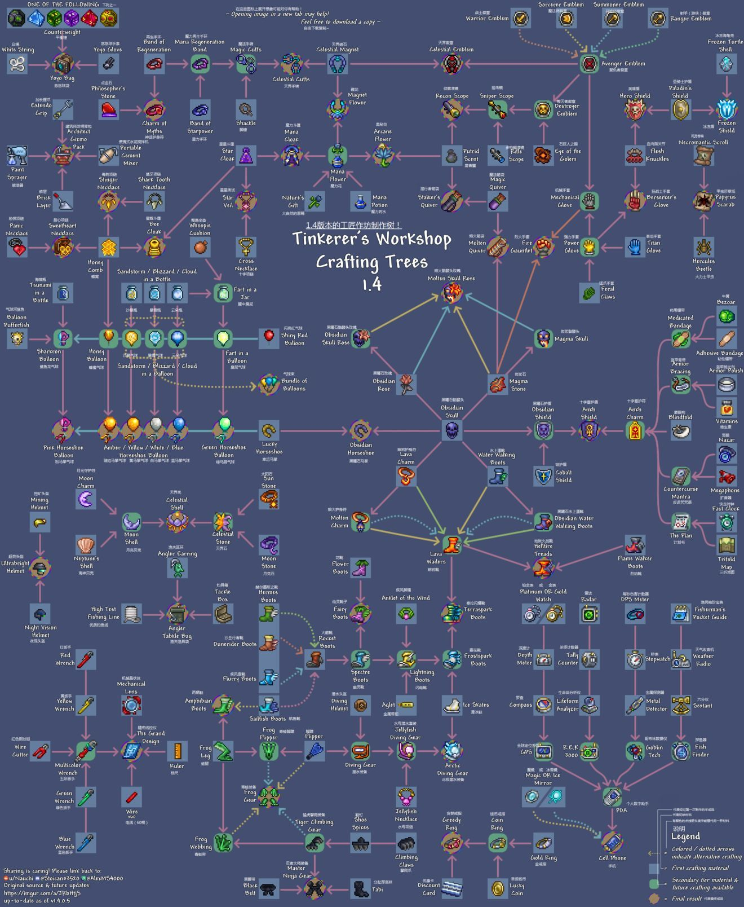

泰拉瑞亚的核心玩法之一就是「合成」——通过收集各种资源，在特定的合成工具旁制作装备、道具、建筑材料等。合成系统分为两种形式：
部分简单物品可直接在背包的制作栏合成（如工作台、木镐、木剑等），只要背包中有足够的原材料，即可自动解锁配方。
大部分进阶物品需要在特定合成工具旁才能合成（如熔炉、铁砧、织布机等）。靠近这些工具后，背包制作栏会自动解锁对应的配方。
新手需要优先解锁基础合成工具，逐步解锁更高级的配方，才能不断提升自己的装备和生存能力。
以下是初期必须解锁的合成工具，按优先级排序：
最基础的合成工具，解锁大部分初期物品配方
用于将矿石熔炼成锭（铁锭、金锭等），必备进阶工具
用于制作金属装备、高级工具和武器
用于将棉花制作成丝绸，制作防具和家具
掌握以下核心配方，轻松度过新手期：
| 物品名称 | 合成配方 | 所需工具 | 用途 |
|---|---|---|---|
| 木剑 | 7个木材 | 无（背包合成） | 初期自卫武器，击杀史莱姆等弱怪 |
| 木镐 | 10个木材 | 无（背包合成） | 挖掘石头、泥土等基础方块 |
| 火把 | 1个木材 + 1个凝胶 | 无（背包合成） | 照明，防止黑暗中刷怪 |
| 木门 | 6个木材 | 工作台 | 庇护所入口，阻挡怪物进入 |
| 铁剑 | 8个铁锭 | 铁砧 | 中期强力武器，伤害是木剑的2倍 |
| 铁镐 | 10个铁锭 | 铁砧 | 挖掘铁矿、银矿等高级矿石 |
| 生命水晶 | 无法合成（地下探索获得） | 无 | 使用后永久增加20点生命值上限 |